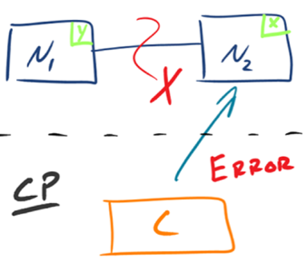
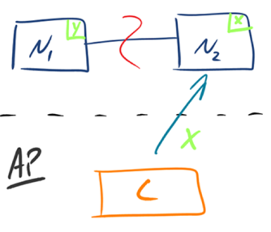

- 00 开篇词 照着做，你也能成为架构师！.md
- 01 架构到底是指什么？.md
- 02 架构设计的历史背景.md
- 03 架构设计的目的.md
- 04 复杂度来源：高性能.md
- 05 复杂度来源：高可用.md
- 06 复杂度来源：可扩展性.md
- 07 复杂度来源：低成本、安全、规模.md
- 08 架构设计三原则.md
- 09 架构设计原则案例.md
- 10 架构设计流程：识别复杂度.md
- 11 架构设计流程：设计备选方案.md
- 12 架构设计流程：评估和选择备选方案.md
- 13 架构设计流程：详细方案设计.md
- 14 高性能数据库集群：读写分离.md
- 15 高性能数据库集群：分库分表.md
- 16 高性能NoSQL.md
- 17 高性能缓存架构.md
- 18 单服务器高性能模式：PPC与TPC.md
- 19 单服务器高性能模式：Reactor与Proactor.md
- 20 高性能负载均衡：分类及架构.md
- 21 高性能负载均衡：算法.md
- 22 想成为架构师，你必须知道CAP理论.md
- 23 想成为架构师，你必须掌握的CAP细节.md
- 24 FMEA方法，排除架构可用性隐患的利器.md
- 25 高可用存储架构：双机架构.md
- 26 高可用存储架构：集群和分区.md
- 27 如何设计计算高可用架构？.md
- 28 业务高可用的保障：异地多活架构.md
- 29 异地多活设计4大技巧.md
- 30 异地多活设计4步走.md
- 31 如何应对接口级的故障？.md
- 32 可扩展架构的基本思想和模式.md
- 33 传统的可扩展架构模式：分层架构和SOA.md
- 34 深入理解微服务架构：银弹 or 焦油坑？.md
- 35 微服务架构最佳实践 - 方法篇.md
- 36 微服务架构最佳实践 - 基础设施篇.md
- 37 微内核架构详解.md
- 38 架构师应该如何判断技术演进的方向？.md
- 39 互联网技术演进的模式.md
- 40 互联网架构模板：存储层技术.md
- 41 互联网架构模板：开发层和服务层技术.md
- 42 互联网架构模板：网络层技术.md
- 43 互联网架构模板：用户层和业务层技术.md
- 44 互联网架构模板：平台技术.md
- 45 架构重构内功心法第一式：有的放矢.md
- 46 架构重构内功心法第二式：合纵连横.md
- 47 架构重构内功心法第三式：运筹帷幄.md
- 48 再谈开源项目：如何选择、使用以及二次开发？.md
- 49 谈谈App架构的演进.md
- 50 架构实战：架构设计文档模板.md
- 51 如何画出优秀的软件系统架构图？.md
- 加餐｜业务架构实战营开营了.md
- 加餐｜单服务器高性能模式性能对比.md
- 加餐｜扒一扒中台皇帝的外衣.md
- 如何高效地学习开源项目 华仔，放学别走！ 第3期.md
- 新书首发 《从零开始学架构》.md
- 架构专栏特别放送 华仔，放学别走！ 第2期.md
- 架构专栏特别放送 华仔，放学别走！第1期.md
- 架构师必读书单 华仔，放学别走！ 第5期.md
- 架构师成长之路 华仔，放学别走！ 第4期.md
- 结束语 坚持，成就你的技术梦想.md
22 想成为架构师，你必须知道CAP理论
CAP定理（CAP theorem）又被称作布鲁尔定理（Brewer’s theorem），是加州大学伯克利分校的计算机科学家埃里克·布鲁尔（Eric Brewer）在2000年的ACM PODC上提出的一个猜想。2002年，麻省理工学院的赛斯·吉尔伯特（Seth Gilbert）和南希·林奇（Nancy Lynch）发表了布鲁尔猜想的证明，使之成为分布式计算领域公认的一个定理。对于设计分布式系统的架构师来说，CAP是必须掌握的理论。
布鲁尔在提出CAP猜想的时候，并没有详细定义Consistency、Availability、Partition Tolerance三个单词的明确定义，因此如果初学者去查询CAP定义的时候会感到比较困惑，因为不同的资料对CAP的详细定义有一些细微的差别，例如：
Consistency: where all nodes see the same data at the same time.
Availability: which guarantees that every request receives a response about whether it succeeded or failed.
Partition tolerance: where the system continues to operate even if any one part of the system is lost or fails.
(https://console.bluemix.net/docs/services/Cloudant/guides/cap_theorem.html#cap-)
Consistency: Every read receives the most recent write or an error.
Availability: Every request receives a (non-error) response – without guarantee that it contains the most recent write.
Partition tolerance: The system continues to operate despite an arbitrary number of messages being dropped (or delayed) by the network between nodes.
(https://en.wikipedia.org/wiki/CAP_theorem#cite_note-Brewer2012-6)
Consistency: all nodes have access to the same data simultaneously.
Availability: a promise that every request receives a response, at minimum whether the request succeeded or failed.
Partition tolerance: the system will continue to work even if some arbitrary node goes offline or can’t communicate.
(https://www.teamsilverback.com/understanding-the-cap-theorem/)
为了更好地解释CAP理论，我挑选了Robert Greiner（http://robertgreiner.com/about/）的文章作为参考基础。有趣的是，Robert Greiner对CAP的理解也经历了一个过程，他写了两篇文章来阐述CAP理论，第一篇被标记为“outdated”（有一些中文翻译文章正好参考了第一篇），我将对比前后两篇解释的差异点，通过对比帮助你更加深入地理解CAP理论。
CAP理论
第一版解释：
Any distributed system cannot guaranty C, A, and P simultaneously.
（http://robertgreiner.com/2014/06/cap-theorem-explained/）
简单翻译为：对于一个分布式计算系统，不可能同时满足一致性（Consistence）、可用性（Availability）、分区容错性（Partition Tolerance）三个设计约束。
第二版解释：
In a distributed system (a collection of interconnected nodes that share data.), you can only have two out of the following three guarantees across a write/read pair: Consistency, Availability, and Partition Tolerance - one of them must be sacrificed.
（http://robertgreiner.com/2014/08/cap-theorem-revisited/）
简单翻译为：在一个分布式系统（指互相连接并共享数据的节点的集合）中，当涉及读写操作时，只能保证一致性（Consistence）、可用性（Availability）、分区容错性（Partition Tolerance）三者中的两个，另外一个必须被牺牲。
对比两个版本的定义，有几个很关键的差异点：
- 第二版定义了什么才是CAP理论探讨的分布式系统，强调了两点：interconnected和share data，为何要强调这两点呢？ 因为分布式系统并不一定会互联和共享数据。最简单的例如Memcache的集群，相互之间就没有连接和共享数据，因此Memcache集群这类分布式系统就不符合CAP理论探讨的对象；而MySQL集群就是互联和进行数据复制的，因此是CAP理论探讨的对象。
- 第二版强调了write/read pair，这点其实是和上一个差异点一脉相承的。也就是说，CAP关注的是对数据的读写操作，而不是分布式系统的所有功能。例如，ZooKeeper的选举机制就不是CAP探讨的对象。
相比来说，第二版的定义更加精确。
虽然第二版的定义和解释更加严谨，但内容相比第一版来说更加难记一些，所以现在大部分技术人员谈论CAP理论时，更多还是按照第一版的定义和解释来说的，因为第一版虽然不严谨，但非常简单和容易记住。
第二版除了基本概念，三个基本的设计约束也进行了重新阐述，我来详细分析一下。
1.一致性（Consistency）
第一版解释：
All nodes see the same data at the same time.
简单翻译为：所有节点在同一时刻都能看到相同的数据。
第二版解释：
A read is guaranteed to return the most recent write for a given client.
简单翻译为：对某个指定的客户端来说，读操作保证能够返回最新的写操作结果。
第一版解释和第二版解释的主要差异点表现在：
- 第一版从节点node的角度描述，第二版从客户端client的角度描述。
相比来说，第二版更加符合我们观察和评估系统的方式，即站在客户端的角度来观察系统的行为和特征。
- 第一版的关键词是see，第二版的关键词是read。
第一版解释中的see，其实并不确切，因为节点node是拥有数据，而不是看到数据，即使要描述也是用have；第二版从客户端client的读写角度来描述一致性，定义更加精确。
- 第一版强调同一时刻拥有相同数据（same time + same data），第二版并没有强调这点。
这就意味着实际上对于节点来说，可能同一时刻拥有不同数据（same time + different data），这和我们通常理解的一致性是有差异的，为何做这样的改动呢？其实在第一版的详细解释中已经提到了，具体内容如下：
A system has consistency if a transaction starts with the system in a consistent state, and ends with the system in a consistent state. In this model, a system can (and does) shift into an inconsistent state during a transaction, but the entire transaction gets rolled back if there is an error during any stage in the process.
参考上述的解释，对于系统执行事务来说，在事务执行过程中，系统其实处于一个不一致的状态，不同的节点的数据并不完全一致，因此第一版的解释“All nodes see the same data at the same time”是不严谨的。而第二版强调client读操作能够获取最新的写结果就没有问题，因为事务在执行过程中，client是无法读取到未提交的数据的，只有等到事务提交后，client才能读取到事务写入的数据，而如果事务失败则会进行回滚，client也不会读取到事务中间写入的数据。
2.可用性（Availability）
第一版解释：
Every request gets a response on success/failure.
简单翻译为：每个请求都能得到成功或者失败的响应。
第二版解释：
A non-failing node will return a reasonable response within a reasonable amount of time (no error or timeout).
简单翻译为：非故障的节点在合理的时间内返回合理的响应（不是错误和超时的响应）。
第一版解释和第二版解释主要差异点表现在：
- 第一版是every request，第二版强调了A non-failing node。
第一版的every request是不严谨的，因为只有非故障节点才能满足可用性要求，如果节点本身就故障了，发给节点的请求不一定能得到一个响应。
- 第一版的response分为success和failure，第二版用了两个reasonable：reasonable response 和reasonable time，而且特别强调了no error or timeout。
第一版的success/failure的定义太泛了，几乎任何情况，无论是否符合CAP理论，我们都可以说请求成功和失败，因为超时也算失败、错误也算失败、异常也算失败、结果不正确也算失败；即使是成功的响应，也不一定是正确的。例如，本来应该返回100，但实际上返回了90，这就是成功的响应，但并没有得到正确的结果。相比之下，第二版的解释明确了不能超时、不能出错，结果是合理的，注意没有说“正确”的结果。例如，应该返回100但实际上返回了90，肯定是不正确的结果，但可以是一个合理的结果。
3.分区容忍性（Partition Tolerance）
第一版解释：
System continues to work despite message loss or partial failure.
简单翻译为：出现消息丢失或者分区错误时系统能够继续运行。
第二版解释：
The system will continue to function when network partitions occur.
简单翻译为：当出现网络分区后，系统能够继续“履行职责”。
第一版解释和第二版解释主要差异点表现在：
- 第一版用的是work，第二版用的是function。
work强调“运行”，只要系统不宕机，我们都可以说系统在work，返回错误也是work，拒绝服务也是work；而function强调“发挥作用”“履行职责”，这点和可用性是一脉相承的。也就是说，只有返回reasonable response才是function。相比之下，第二版解释更加明确。
- 第一版描述分区用的是message loss or partial failure，第二版直接用network partitions。
对比两版解释，第一版是直接说原因，即message loss造成了分区，但message loss的定义有点狭隘，因为通常我们说的message loss（丢包），只是网络故障中的一种；第二版直接说现象，即发生了分区现象，不管是什么原因，可能是丢包，也可能是连接中断，还可能是拥塞，只要导致了网络分区，就通通算在里面。
CAP应用
虽然CAP理论定义是三个要素中只能取两个，但放到分布式环境下来思考，我们会发现必须选择P（分区容忍）要素，因为网络本身无法做到100%可靠，有可能出故障，所以分区是一个必然的现象。如果我们选择了CA而放弃了P，那么当发生分区现象时，为了保证C，系统需要禁止写入，当有写入请求时，系统返回error（例如，当前系统不允许写入），这又和A冲突了，因为A要求返回no error和no timeout。因此，分布式系统理论上不可能选择CA架构，只能选择CP或者AP架构。
1.CP - Consistency/Partition Tolerance
如下图所示，为了保证一致性，当发生分区现象后，N1节点上的数据已经更新到y，但由于N1和N2之间的复制通道中断，数据y无法同步到N2，N2节点上的数据还是x。这时客户端C访问N2时，N2需要返回Error，提示客户端C“系统现在发生了错误”，这种处理方式违背了可用性（Availability）的要求，因此CAP三者只能满足CP。

2.AP - Availability/Partition Tolerance
如下图所示，为了保证可用性，当发生分区现象后，N1节点上的数据已经更新到y，但由于N1和N2之间的复制通道中断，数据y无法同步到N2，N2节点上的数据还是x。这时客户端C访问N2时，N2将当前自己拥有的数据x返回给客户端C了，而实际上当前最新的数据已经是y了，这就不满足一致性（Consistency）的要求了，因此CAP三者只能满足AP。注意：这里N2节点返回x，虽然不是一个“正确”的结果，但是一个“合理”的结果，因为x是旧的数据，并不是一个错乱的值，只是不是最新的数据而已。

小结
今天我为你讲了CAP理论，通过对比两个不同版本的CAP理论解释，详细地分析了CAP理论的准确定义，希望对你有所帮助。
这就是今天的全部内容，留一道思考题给你吧，基于Paxos算法构建的分布式系统，属于CAP架构中的哪一种？谈谈你的分析和理解。
© 2019 - 2023 Liangliang Lee. Powered by gin and hexo-theme-book.